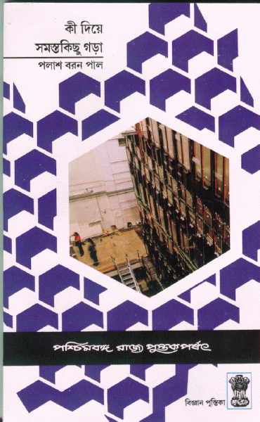
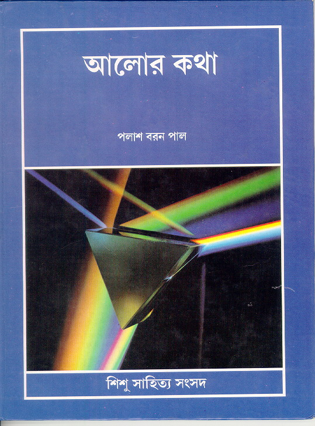
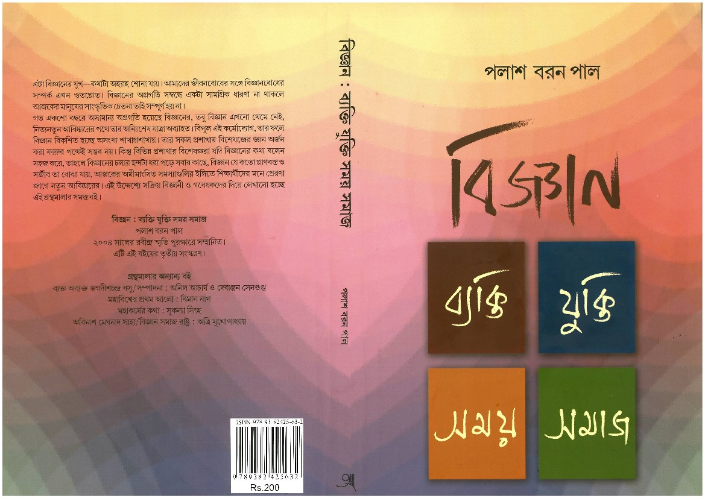

Home page of Palash Baran Pal
Popular-level Books on Science
(Click on the thumbnails for a larger view of the
covers)

- Ki diyé samastô-kichu
gorá (What is everything made of):
Popular book on particle physics in Bengali. West Bengal State Book
Board, Calcutta, 1988. [Second edition 1997.]
Contents

-
Sál-tarikhér itihás (A history of dates
and years): A book in Bengali
on the development of calendars in various civilizations and its relation
to the development of Astronomy. Samatat Prakashan, Calcutta,
1994. [Second edition, Sarat Book Distributors, Calcutta, 2003]
Contents

-
Sutrapát
(Bengali translation of Isaac Asimov's "Beginnings", done
in collaboration with Shekhar Guha): Anustup,
Calcutta, 1997.
Contents
Back cover & spine

-
Álôr kathá
(On light):
A book for children in Bengali on light. Shishu Sahitya
Samsad, Calcutta, 1999. [Second edition 2005.]
Contents

-
Bigyán: byakti jukti somoy somáj
(Science: persons, arguments, time and society):
A collection of popular scientific articles in Bengali.
Anustup, Calcutta, 2001.
Contents (postscript file)

-
Mápjôker itihás
(A history of measurements):
A book in Bengali on the evolution of various units of measurement.
Anustup, Calcutta, 2002. [2nd edition, Sarat Book Distributors,
Calcutta, 2003]
Contents (postscript file)
Back cover
{kind=link}
{kind=link}
{kind=link}
{kind=link}
{kind=link}
{kind=link}